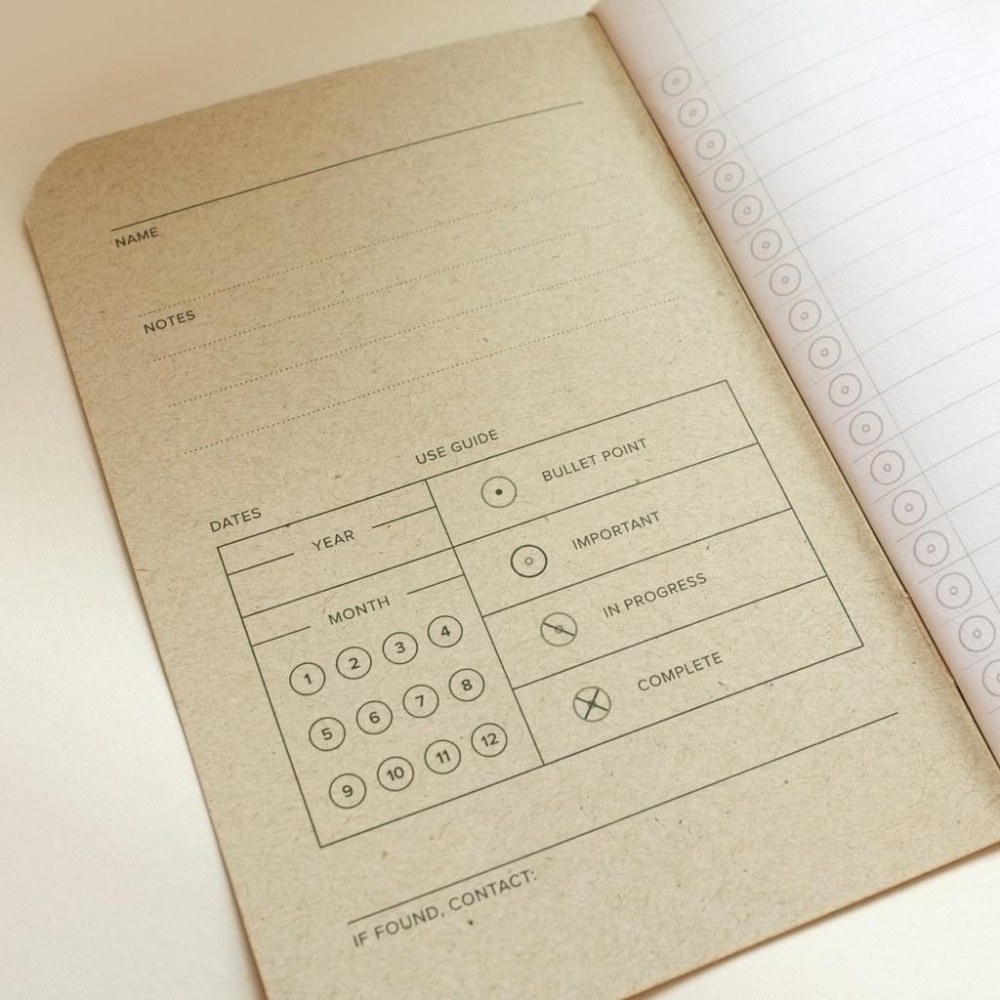
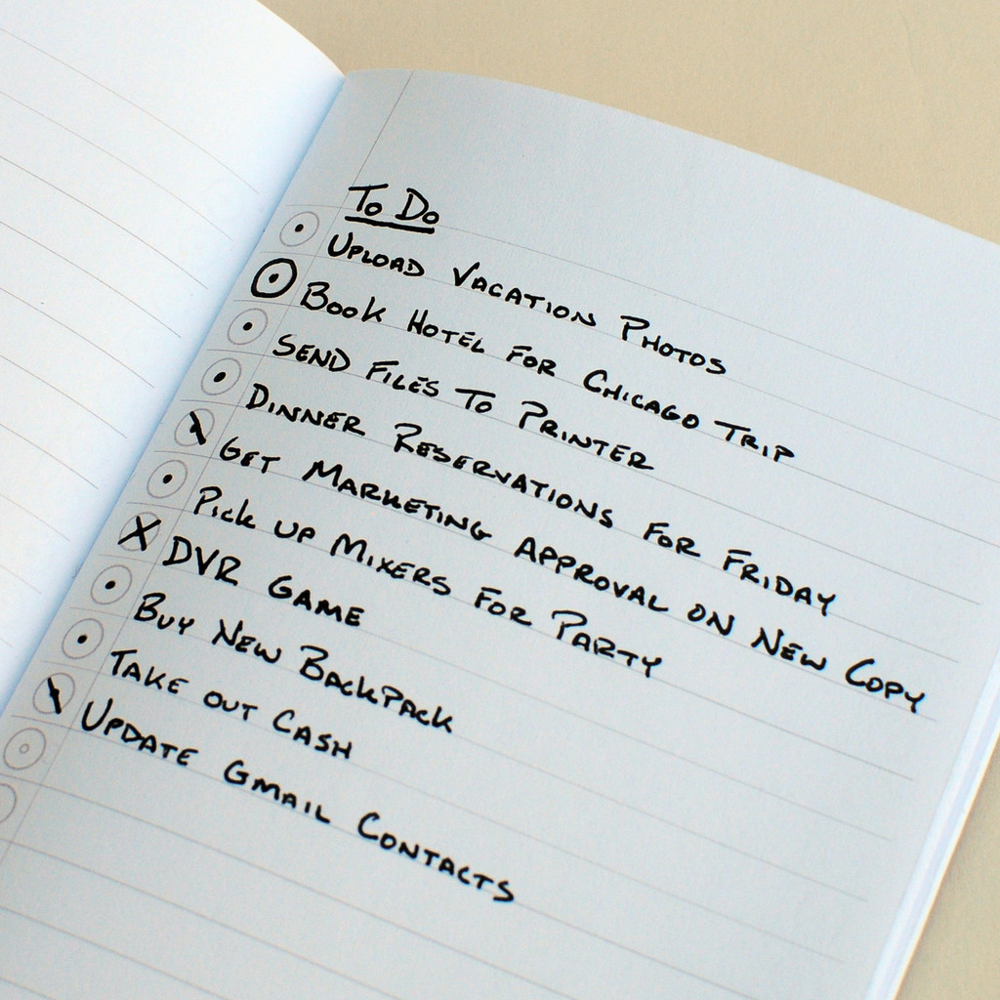

Handwritten Code for Todos
I feel like I have tried every single app, software or digital tool on the market for productivity and todo lists, but I always end up going back to the tried and true pen and paper solution. This evening I came across this handwritten todo code that Word Notebooks adds as a guide to managed your lists.
Dots for bullet points, circles for high priority, one slash for in progress and a X for completed tasks. I might have to order a pack of the Swedish Camo notebooks.